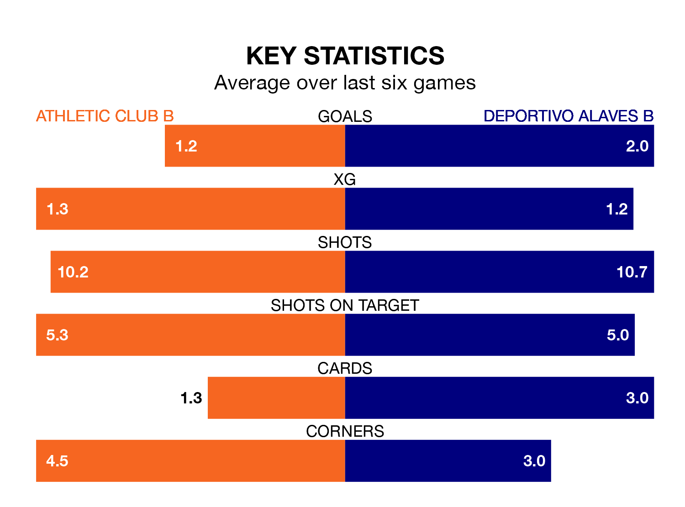

Two of the Segunda División RFEF Group 2's top sides face each other in Sunday's early kick-off, when table-topping Athletic Club B host fourth-placed Deportivo Alaves B.
Athletic Club B have picked up 16 wins and five draws from 22 games so far this season, and sit 12 points above the visitors going into the 10.30am match.
Deportivo Alaves B, meanwhile, have won 13 and drawn two, picking up 41 points.
With 41 goals in 22 games so far this season, Athletic Club B are the league's second-highest scorers with 1.9 goals per game. And they are conceding fewer than average, letting in seven goals at a rate of 0.3 per game.
Deportivo Alaves B are also above average scorers, with 1.8 goals per game, compared to a league average of 1.1. They have conceded 1.0 goal per game.
In the last five years, Athletic Club B and Deportivo Alaves B have played each other on four occasions. Athletic Club B won all of them.
Their last meeting was on October 8, when Athletic Club B won 2-0 away.
The home team are in reasonable form in the Segunda División RFEF Group 2, with three wins and three draws from their last six games.
With three wins and a draw over that period, the visitors' form is slightly worse – they have taken 10 points from 18, compared to Athletic Club B's 12.
Athletic Club B's last match was on February 10, a 2-0 win against CD Valle Egüés.
Deportivo Alaves B beat UD Logroñés 1-0 last time out, on Sunday.
Updated: 09:02 (UTC), 13/02/24